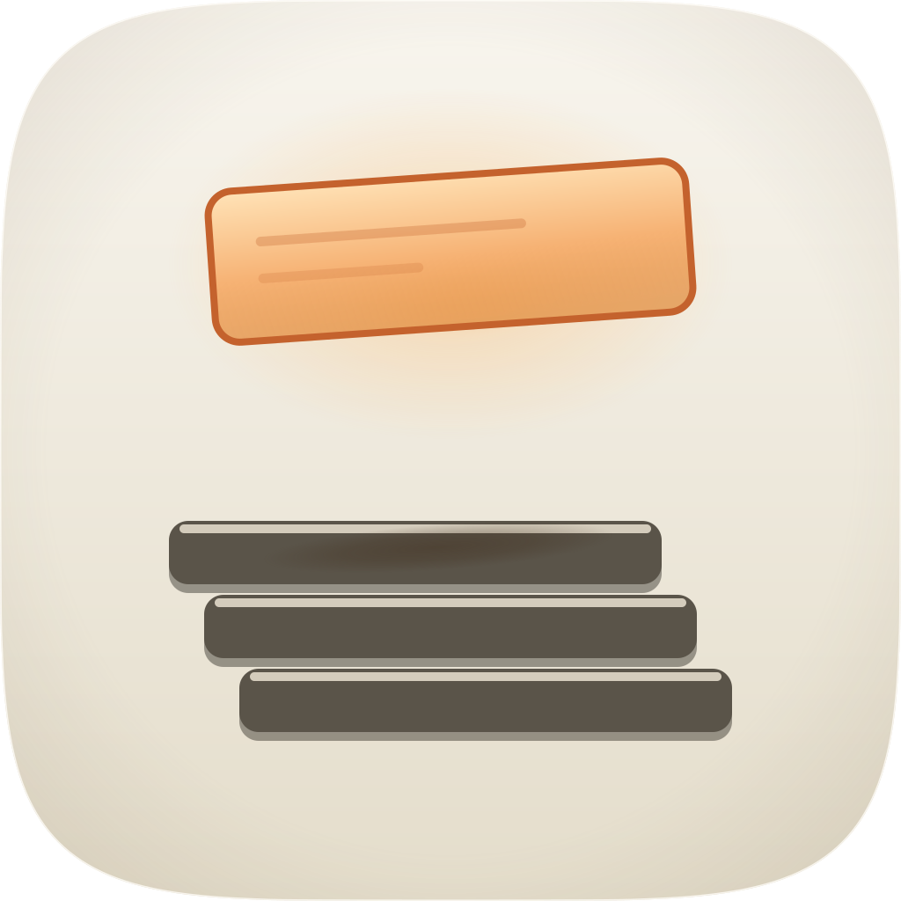
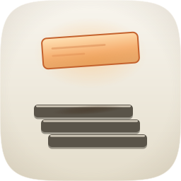
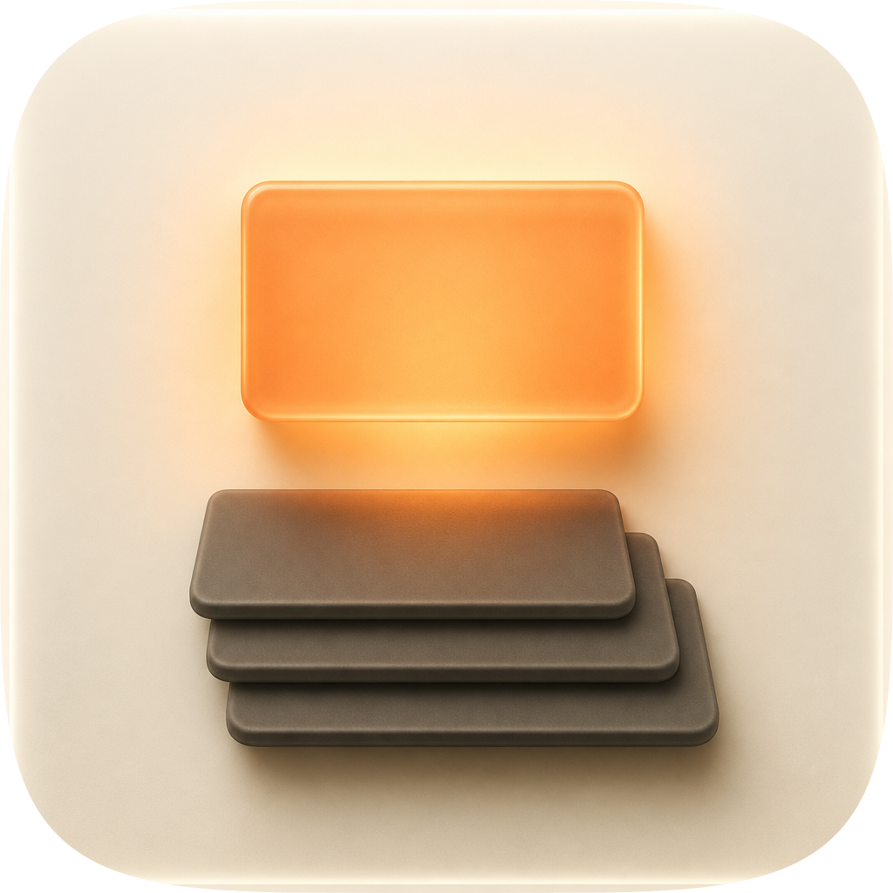
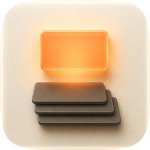
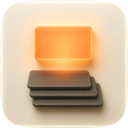
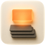
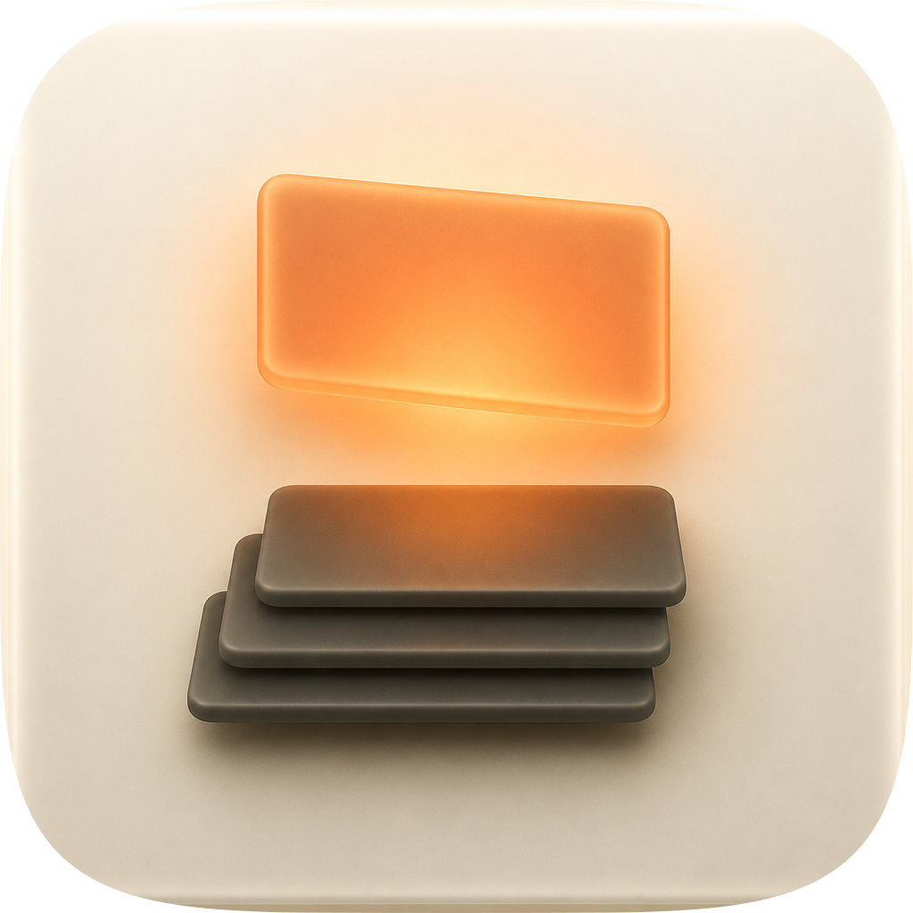
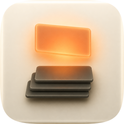
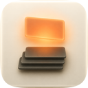
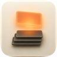

| Take | Hero at 1024, then renders at 128 / 64 / 48 / 32 / 16 css px (2× retina sources), plus the 16px squint magnified | Rubric | Verdict |
|---|---|---|---|
A · icon.svgEngine A, hand-authored layered SVG from build_icon.py — SHIPS |
      |
11 / 12fails 10 | Three filed cards low in the tile, fanned 24px per row, one card lifted clear above them and lit from behind so that card alone is translucent and saturated. It owns the set's signature move and the set's best small-size read of the subject: at 16px the void between the two elements recovers to 98% of the tile ground's luminance, against 94% for A2 and 61–64% for the two rasters, whose bloom fills the gap that carries the meaning. Clears all four non-negotiables on the renders beside it. What it loses, and both are now comparisons rather than assertions: its focal group is 37.9% of tile width against a 55–65% composition band that every other take lands inside, and its 16px luminance spread is 0.186, the lowest of the four and only 1.06× the 36-icon family median of 0.176. Its one rubric failure is #10. |
A2 · icon-A2-wide.svgEngine A widened, hand-authored from build_icon_A2.py — the take Engine B's refusal bought |
  |
11 / 12fails 10 | The same committed idea re-proportioned and re-lit, briefed directly at the two
liabilities the master's own sheet measured. Cards 560×72 fanned 40px put the focal group at
62.5% × 64.6% — inside the band on both axes, against the master's 37.9% — with the
fan scaled to the card so the filed-paper read survives (40/560 = 7.1%, against 24/340 = 7.1%). Its lit
plane is value-carried rather than outline-carried: opaque through the upper two thirds and 0.72 only in the
lower third, giving 1.69:1 against the local ground where the master's fill gives 1.52:1,
behind a darker #C4622D rim at 3.76:1 against the master's #DD6413 at 3.27:1.
Each filed card carries a bright #EFE7D6 lit arris, which is the only real #10 mitigation in
the set: on a charcoal ground that edge holds 11.47:1 where the master's darker cap holds
2.52:1 — but it is 10px of a 72px card, 14% of the mass, and no variant was rendered, so it does not buy
the point. What it costs is the reason it does not ship: opaque through two thirds, the lifted card reads as
a warm label with a keyline rather than a plane with a light behind it, and “the only warm thing on the
tile because it is the only thing that has been looked at” needs backlighting, not paint. Its 16px
spread is 0.232, 25% above the master's. |
| C2 · icon-engineC-5cd65c-2.pngEngine C, GPT Image 2 raster, four porcelain corpus references — the material donor |     |
11 / 12fails 10 | The best material in the set and the reason a fidelity loop is the honest next step: matte-satin
slabs with real thickness, ambient occlusion between the filed cards, generous rounded arrises, a real
contact shadow on the porcelain under the bottom card, and the Tahoe cushion tell the hand-authored takes
only gesture at — its inner rim light is present on 94.3% of the sampled perimeter at a
median 10px inset, against 51.4% for the two SVG takes, whose 3px stroke sits within 0.035 luminance of the
porcelain across the tile's upper half. Focal group 60.8% × 69.8%: the width is in the band, the
height overshoots it by 4.8 points. It fails #10 the way a raster always does — one flat layer, nothing to
swap, which is the named 76% failure mode, and the reason the skill's rule is that a raster is the material
target and never the shipped master. Two liabilities beyond the score. The gap that carries the subject
recovers to only 61% of ground luminance at 16px, so the tile reads as a bright mass
resting on a dark one — the air is gone. And the lifted element is 1.88:1 in aspect against the filed
cards' 6.9:1, so the same-width, same-radius, same-silhouette move the commission committed to is absent;
four corpus references transferred the material and the ground treatment and did not transfer the
relationship, which is the same negative result this pipeline recorded on proctor. |
| C1 · icon-engineC-d5a874.pngEngine C, the same call's first image — same references, worse modelling |     |
10 / 12fails 8, 10 | C2's material with a modelling failure in the one element that has to be perfect. The lifted card is a trapezoid: its top and bottom edges are not parallel, its left edge is shorter than its right, its corner radii disagree corner to corner, and a second lip runs along the bottom edge that reads as a duplicate surface fused to the first. That is a depth-coherence failure (#8) — two planes occupying one place — and it is visible at 1024 and at 128. It fails #10 for the same structural reason as C2 and carries the same two liabilities: the 16px gap recovers to 64% of ground, and the lifted element is 1.55:1 in aspect against the filed cards' roughly 7:1. Kept on the sheet rather than deleted because it is the same prompt and the same four references as C2, one image apart in the same call, which is the useful thing it records: the raster engine's material is reliable and its geometry is not. |